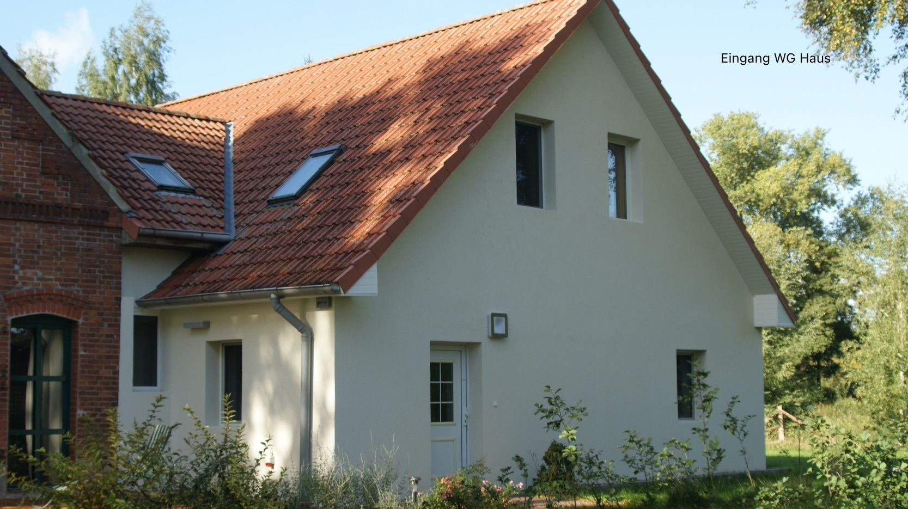
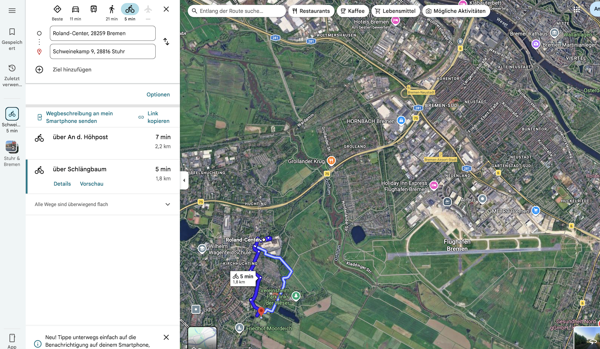

Möblierte WG-Zimmer auf einem Resthof in Stuhr — direkt an der Bremer Stadtgrenze. Natur pur und trotzdem nur 1,5 km zur Straßenbahn-Station „Roland Center". Von dort mit der Tram 1 oder 8 in nur 9 Minuten zur Hochschule Bremen (City University of Applied Sciences). Die Universität Bremen erreicht man vom „Roland Center" in 42 Minuten mit der Tram 1 und Umsteigen an der „Domsheide" in die Tram 6.

Alles was du für dein Studium brauchst — auf einem Resthof mit Charme.
1,5 km mit dem Rad zum Roland Center, dann Tram 1 oder 8 in nur 9 Minuten zur Hochschule Bremen.
Bett, Schreibtisch, Schrank, Regal — du brauchst nur noch deinen Koffer.
Wohnen auf einem Resthof mit viel Grün und Natur — direkt an der Bremer Stadtgrenze in 28816 Stuhr.
Haus mit 8 Zimmern und 3 Bädern, Wohnung mit 6 Zimmern und 2 Bädern.
Schweinekamp 9, 28816 Stuhr
Resthof in Stuhr — Natur pur, trotzdem bestens angebunden.
